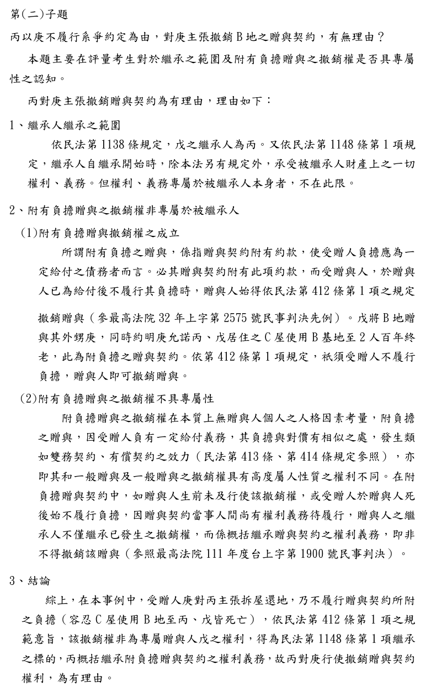
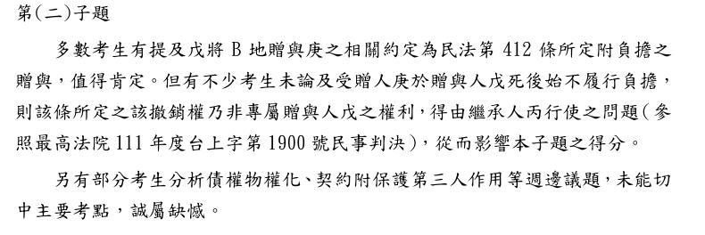

太太把地送外甥，外甥違約，先生能撤銷嗎？
113年律師第二試｜民法與民事訴訟法（一）｜第一題第（二）小題（25分）
題目
這一題有三個小題。本頁只做第（二）小題，用得到的事實畫黃色底線。
- （一）丙、丁依民法第244條第2項規定，聲請法院撤銷甲、乙間就A地之買賣契約及所有權移轉登記行為，有無理由？（25分）（本題講義）
- （二）丙以庚不履行系爭約定為由，對庚主張撤銷B地之贈與契約，有無理由？（25分）本頁只做這一題
- （三）辛以D地受袋地通行權限制為由，向丁請求權利瑕疵擔保之損害賠償，有無理由？（25分）（本題講義）
影片說明
影片依序示範：主播介紹、整題讀一遍並逐句畫出事實、故事圖、關係圖、第412條、第1148條、第412條與第416條比較表、第417條例外、111台上1900的撤銷權分類、時間軸涵攝、三個易錯點，最後把擬答從頭看一遍。
關係與時間：負擔履行到什麼時候？
庚是在戊死後才不履行負擔，這時契約還有義務沒履行完，所以重點是：繼承人丙能不能接手這個撤銷權？
本題用到的條文
先看核心條文。原文中畫底線的部分，就是本題用到的那一句。
民法第412條：附負擔贈與的撤銷
贈與附有負擔者，如贈與人已為給付而受贈人不履行其負擔時，贈與人得請求受贈人履行其負擔，或撤銷贈與。負擔以公益為目的者，於贈與人死亡後，主管機關或檢察官得請求受贈人履行其負擔。
白話送東西時附了條件（負擔），對方拿到東西卻不照條件做，送的人可以要求他做，或乾脆撤銷贈與。
例子阿姨把地送外甥，條件是讓姨丈住到老；外甥要趕姨丈走，就是不履行負擔。
民法第416條：受贈人忘恩負義
受贈人對於贈與人，有左列情事之一者，贈與人得撤銷其贈與：一、對於贈與人、其配偶、直系血親、三親等內旁系血親或二親等內姻親，有故意侵害之行為，依刑法有處罰之明文者。二、對於贈與人有扶養義務而不履行者。前項撤銷權，自贈與人知有撤銷原因之時起，一年內不行使而消滅。贈與人對於受贈人已為宥恕之表示者，亦同。
白話受贈人傷害贈與人或其家人，或該扶養卻不扶養，贈與人可以撤銷。但贈與人原諒了，撤銷權就消滅。
例子爸爸把房子送兒子，兒子後來打傷爸爸；爸爸要不要撤銷、要不要原諒，只有爸爸能決定。
民法第417條：第416條的例外
受贈人因故意不法之行為，致贈與人死亡或妨礙其為贈與之撤銷者，贈與人之繼承人，得撤銷其贈與。但其撤銷權自知有撤銷原因之時起，六個月間不行使而消滅。
白話只有在受贈人害死贈與人、或阻止他撤銷時，繼承人才能撤銷。立法者特別寫這個例外，表示第416條的撤銷權原則上不能繼承。
例子兒子把爸爸殺害，爸爸已無法撤銷，其他繼承人可以撤銷那筆贈與。
民法第1148條第1項：繼承的範圍
繼承人自繼承開始時，除本法另有規定外，承受被繼承人財產上之一切權利、義務。但權利、義務專屬於被繼承人本身者，不在此限。
白話繼承人原則上接手死者所有財產上的權利義務，只有「專屬本人」的不能接手。
例子死者的存款、債務都會繼承；但死者自己才能決定要不要原諒別人這種權利，不會傳給繼承人。
其他用到的條文（點開）
民法第413條、第414條：附負擔贈與像有償契約
第413條：附有負擔之贈與，其贈與不足償其負擔者，受贈人僅於贈與之價值限度內，有履行其負擔之責任。第414條：附有負擔之贈與，其贈與之物或權利如有瑕疵，贈與人於受贈人負擔之限度內，負與出賣人同一之擔保責任。
白話附負擔的贈與，雙方都有義務，法律讓它準用買賣的規則，所以最高法院說它「類如雙務、有償契約」。
民法第419條：撤銷的方法
贈與之撤銷，應向受贈人以意思表示為之。贈與撤銷後，贈與人得依關於不當得利之規定，請求返還贈與物。
白話丙寄撤銷通知給庚就可以，不必先打官司；撤銷後可以要求返還B地。
民法第1138條：繼承人的順序
遺產繼承人，除配偶外，依左列順序定之：一、直系血親卑親屬。二、父母。三、兄弟姊妹。四、祖父母。
白話配偶丙一定是繼承人。戊沒有子女；題目沒有交代戊的父母、兄弟姊妹是否在世。
以上條文均依全國法規資料庫現行條文核對（2026-11-14）。
比較表：兩種撤銷贈與
| 比較 | 第412條 附負擔贈與 | 第416條 忘恩負義 |
|---|---|---|
| 撤銷理由 | 受贈人沒照約定做 | 受贈人傷害贈與人或其家人、不扶養贈與人 |
| 看什麼 | 客觀上有沒有履行，像交易 | 贈與人被背叛的感受 |
| 能否原諒而消滅 | 條文沒有規定 | 可以，宥恕就消滅（第2項） |
| 能否由繼承人行使 | 可以（111台上1900） | 原則不行；只有第417條情形例外 |
最高法院111年度台上字第1900號判決把撤銷權分成兩類：
| 可以繼承 | 專屬本人，不能繼承 |
|---|---|
| 暴利行為（§74）、錯誤（§88）、傳達錯誤（§89）、被詐欺或脅迫（§92）、詐害債權（§244）、附負擔贈與（§412） | 忘恩負義（§416）、受贈人害死贈與人等（§417，繼承人自己取得的權利） |
判斷標準：這個撤銷權是不是因雙方特殊關係而產生、或涉及公益。是，就專屬本人；不是，就可以繼承。
答題地圖
標號層次：一、→（一）→1.。第一行直接寫結論，不再加題號「（二）」。
考選部評分要點與閱卷委員的話
| 評分要點 | 內容 |
|---|---|
| 1. 繼承之範圍 | 依第1138條戊之繼承人為丙；第1148條第1項承受財產上一切權利義務，但專屬者不在此限。 |
| 2. 附負擔贈與撤銷權 | (1) 附負擔贈與之定義與第412條第1項撤銷（32上2575）。(2) 撤銷權不具專屬性：負擔與對價相似，類如雙務、有償契約（第413、414條）；贈與人生前未行使，或受贈人於贈與人死後始不履行，繼承人概括繼承贈與契約之權利義務，得撤銷（111台上1900）。 |
| 3. 結論 | 丙對庚行使撤銷贈與契約權利，為有理由。 |

閱卷委員的話：
- 多數考生有提到第412條附負擔贈與，值得肯定。
- 不少考生沒有討論受贈人在贈與人死後才不履行負擔、撤銷權並非專屬而可由繼承人丙行使（111台上1900），影響得分。
- 部分考生分析債權物權化、契約附保護第三人作用等周邊議題，沒有切中考點。

來源：考選部〈113年司法官、律師考試第二試法律專業科目評分要點與閱卷委員的話〉民法與民事訴訟法（一）第3、4、6頁，已轉成圖片逐頁核對。
擬答
丙得撤銷戊、庚間B地之贈與契約。
一、系爭約定為附負擔之贈與
附負擔之贈與，係贈與契約附有約款，使受贈人負擔應為一定給付之債務（32上2575）。戊將B地贈與庚，同時約定庚應容忍C屋使用B地至丙、戊終老，非單純贈與動機，屬附負擔之贈與。依題意戊已為給付；戊死後丙尚生存，負擔未履行完畢，庚旋即訴請拆屋還地，係可歸責地不履行其負擔，贈與人得依民法第412條第1項撤銷贈與。
二、撤銷權得否由丙繼承
（一）繼承人自繼承開始時，承受被繼承人財產上之一切權利義務，但專屬於被繼承人本身者，不在此限（第1148條第1項）。戊無子女，丙為其配偶，為繼承人（第1138條）。
（二）第416條之撤銷權因受贈人忘恩行為而生，並得因宥恕而消滅，具高度屬人性；繼承人僅於第417條情形始得撤銷，故屬專屬權。
（三）附負擔之贈與，受贈人負有一定給付義務，類似有償契約（第413條、第414條）；第412條之撤銷，祇須受贈人就負擔之不履行有可歸責事由，無贈與人人格因素之考量，非專屬權。受贈人於贈與人死後始不履行負擔者，繼承人概括承受贈與契約之權利義務，非僅繼承生前已發生之撤銷權，得撤銷贈與（111台上1900）。
三、結論
丙得依第412條第1項、第1148條第1項，向庚以意思表示撤銷贈與（第419條第1項）。
擬答538字（含標題、標點與數字，不含空白，以程式計算）。
字數上限：為什麼是561字
| 項目 | 數字 |
|---|---|
| 本小題可用時間 | 120分鐘 × 25/150 ＝ 20分鐘 |
| 讀題 | 約3分鐘，實際作答約17分鐘 |
| 打字速度 | 一般人中文打字約每分鐘33字（粗估） |
| 上限 | 17分鐘 × 每分鐘約33字 ＝ 561字 |
互動：換一種撤銷理由，丙還能撤銷嗎？
同樣是戊死後，換成不同的撤銷理由，結果不同。先自己想想，再點。
後兩個分頁是本頁為了對照所做的假設與推論，不是考選部評分要點的內容。本頁推論
實務見解
| 字號 | 重點 | 怎麼用 |
|---|---|---|
| 最高法院32年上字第2575號判決（原為判例，效力同一般最高法院判決） | 附有負擔之贈與，係指贈與契約附有約款，使受贈人負擔應為一定給付之債務；必其贈與契約附有此項約款，而受贈人於贈與人已為給付後不履行其負擔時，贈與人始得依第412條第1項撤銷贈與。 | 附負擔贈與的定義。法令判解系統核對。 |
| 最高法院111年度台上字第1900號民事判決（113年4月17日，部分廢棄發回） | 最高法院自己整理撤銷權的繼承性：暴利、錯誤、誤傳、詐欺脅迫、詐害債權之撤銷權可繼承；第416條撤銷權高度屬人性、第417條為例外，均專屬；第412條附負擔贈與之撤銷「並無贈與人個人之人格因素考量」，贈與人生前未及行使或受贈人於贈與人死後始不履行負擔，繼承人概括繼承贈與契約之權利義務，即非不得撤銷。案情與本題幾乎相同（姪子受贈土地、允諾讓嬸嬸夫妻住到終老）。 | 本題核心依據。另提醒：須先釐清是附負擔贈與，還是另成立使用借貸。發回後更審（113年度上更一字第15號）調解成立，不能說最後撤銷成功。 |
111台上1900 已在司法院裁判書系統開全文並核對右側歷審（2026-11-14）；原文載有當事人姓名，本頁只用身分稱呼。
預想易錯點
以下是批改前預想的錯誤，還不是學生實際作答的統計。
| 可能的錯誤 | 應該怎麼寫 |
|---|---|
| 只寫「是附負擔贈與，可以撤銷」 | 撤銷權是戊的，戊已過世；一定要討論能不能由丙繼承（閱卷委員點名）。 |
| 把第412條當成第416條，說撤銷權專屬、不能繼承 | 第416條才是專屬；第412條無人格因素，可以繼承。 |
| 寫債權物權化、契約附保護第三人作用 | 閱卷委員說偏離考點。 |
| 只說「繼承了戊生前的撤銷權」 | 庚是在戊死後才不履行，撤銷權在戊生前根本還沒發生；要寫丙概括承受整個契約。 |